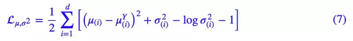

VAE在我心里，是NLP领域生成模型的一把好手。在很多Task上，VAE的表现其实不如RNN，但是其出色的地方在于足够灵活，能生成出很多不一样的符合条件的结果。这么几年下来，VAE也有着各种各样的变体，也会顺便提一下。
VAE & Conditional VAE
VAE
首先来看VAE，其比较详细的解释可以看这里。VAE的模型结构如下：
其Encoder提取输入的特征，并将其map到一个正态分布上。用神经网络输出其均值和方差，得到一个正态分布。这个正态分布体现了输入的特征。编码器不能自由地使用整个潜在空间，而是必须限制产生的z，使其可能服从先验分布。
对正态分布进行采样，采样数据通过Decoder进行输出。采样可以通过重参数技巧进行代换，保证了整个过程可导，绕开了采样这个不可导的动作。
为了保证模型具有一定的生成能力，输出的方差需要进行控制，所以要求这个正态分布向标准正态分布看齐。
使用KL散度衡量这个分布与标准正态分布的距离，其Loss可以推导为下列式子：
LOSS = KL散度 + 生成图片与原图片的交叉熵
之后ELBO的提出都是为了方便计算。VAE 的变分下界，是直接基于 KL 散度就得到的。所以直接承认了 KL 散度的话，就没有变分的什么事了参考。，大体模型就是这个样子。
CVAE
CVAE是一类模型，通过在Encoder与Decoder中添加标签来控制生成结果的类别。
其实现方法是，每一类label，其正态分布存在均值，于是Encoder编码形成的正态分布，不仅方差要接近标准正态分布，而且均值要接近label的均值，可以通过修改KL散度实现：

AAE
AAE，对抗自编码器，在2015年于《Adversial Autoencoders》提出来。其详细介绍在这里可以查看。
其与VAE最显著的特征是将KL散度惩罚替换成了对抗学习的过程。